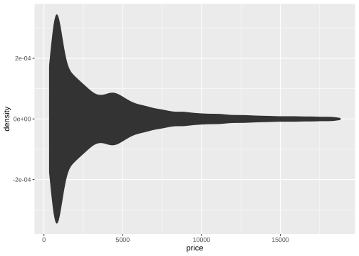
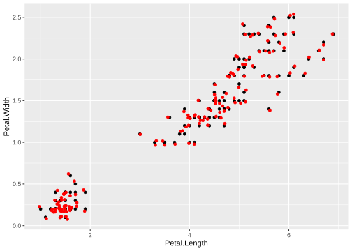
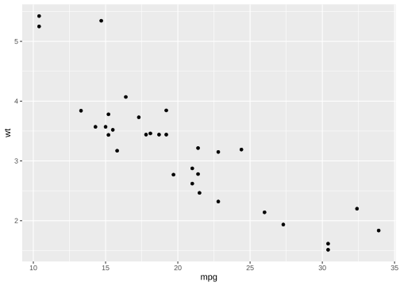
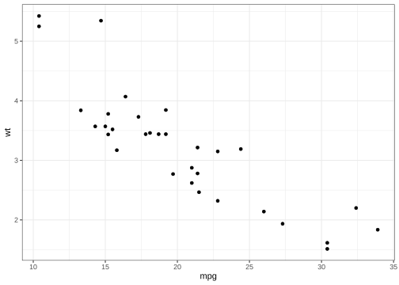
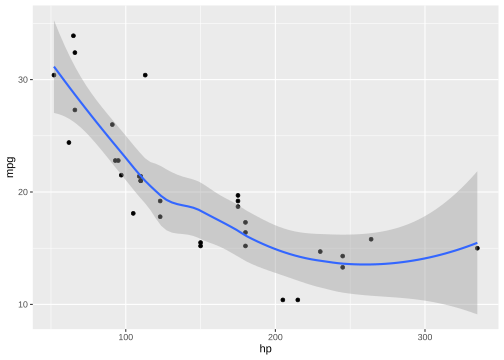
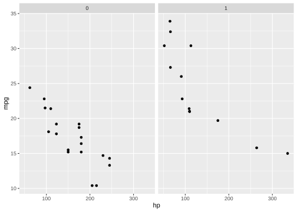
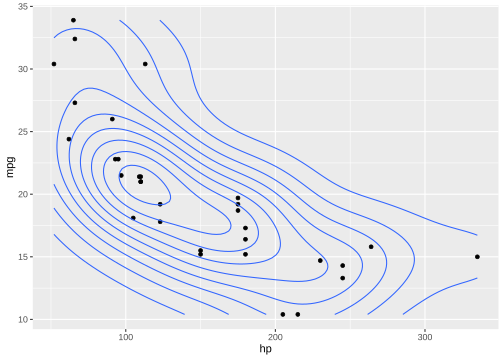
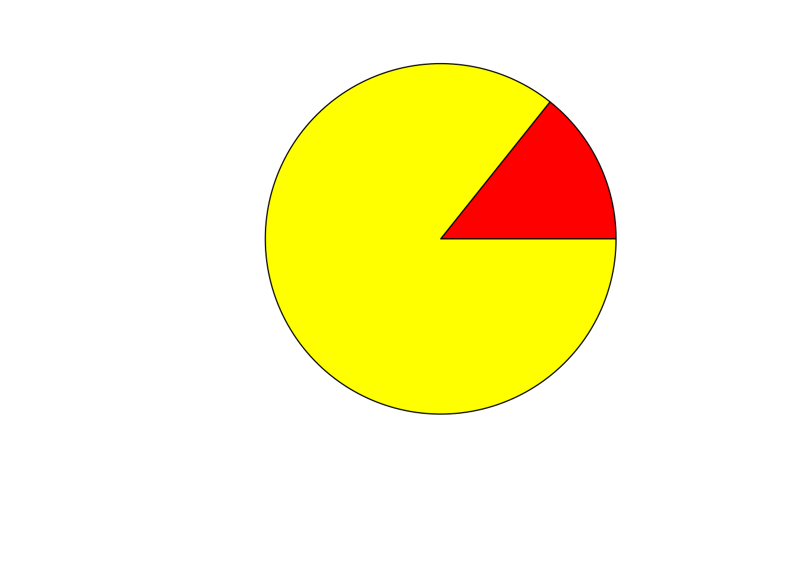
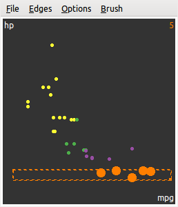

第 5 章 系统
“我不想用各种说法和怀疑来影响你，华生，”他说，“我只要求你将各种事实尽可能详尽地报告给我，至于归纳推理就留给我好了。”
“哪些事实呢？”我问道。
“与该案可能有关的任何事实，无论是多么地间接，特别是年轻的巴斯克维尔与邻里的关系或与查尔兹爵士暴卒有关的任何新的问题。”
— 柯南·道尔《巴斯克维尔的猎犬》
除了基础图形系统之外，R 还自带另一套图形系统即 grid（网格图形），网格图形系统是一套基础设施性质的图形系统，它本身不包含统计图形，只是提供了一些画图形元素的工具。在此基础上诞生了 lattice 图形系统和 ggplot2 图形系统，其中 lattice 包已经随 R 本身发布，ggplot2 包目前的地位还只是一个附加包，但由于它的灵活和美观，用户数量与日俱增，所以我们在本章优先介绍它，并且建议读者可以不必学习 lattice 系统。除了这些静态图形系统之外，R 还有一些附加包支持动态图形和交互式图形，即：用户可以用鼠标或键盘和图形进行交互，比如用鼠标选取图中的点并高亮，或者拖拉旋转图形；代表性的附加包有 rggobi 、 iplots 、 rgl 和 playwith 等。另外我们还可以利用 R 包 animation 生成动画。这些附加包极大增强了统计图形的探索功能和趣味性。
5.1 ggplot2 图形
基础图形系统虽然灵活，但它无穷无尽的选项往往让用户感到迷茫，后面的 lattice 系统也有同样的问题（甚至更严重）。ggplot2 包 (Wickham 2016) 从易用性出发，结合了基础图形系统的简便以及 grid 和 lattice 的灵活，并以“The Grammar of Graphics”一书 (Wilkinson 2005) 的理论为支撑，构建了一套易用、实用而且美观的图形系统。ggplot2 的核心概念是“层”，所有的图形都是由层的叠加构成，这是对统计图形的一个非常形象的抽象；另外，它在程序实现上也很巧妙：它扩展了泛型函数 +，也许用户会对此感到迷茫，后面我们看了具体例子马上就能明白。加号实际上是一个函数，我们平时看到的加法可以写成函数调用的形式：
## [1] 3## [1] 3## [1] +.Date +.POSIXt
## see '?methods' for accessing help and source code在 ggplot2 中，画图只需要将若干个图层简单相加即可，语法非常精炼，如：
library(ggplot2)
p <- ggplot(aes(x = hp, y = mpg), data = mtcars) +
geom_point() # 先画一个散点图的图层
p + geom_smooth(method = "loess") # 用散点图加上平滑层## `geom_smooth()` using formula = 'y ~ x'
使用 ggplot2 时通常我们不必担心细节问题，例如图形的边距会自动调整，不会留出大片空白，元素颜色会自动根据变量取值从调色板中选取，图例会自动添加，等等。这些自动化的设计可以为我们节省大量的调整细节的时间，相比之下，我们使用基础图形常常需要缩小边距（默认值太大）、手工添加图例，显得非常麻烦。函数 ggplot() 是 ggplot2 中的核心函数之一，它能让我们快速画出灵活的图形，其用法如下：
## qplot(x, y, ..., data, facets = NULL, margins = FALSE, geom = "auto",
## xlim = c(NA, NA), ylim = c(NA, NA), log = "", main = NULL, xlab = NULL,
## ylab = NULL, asp = NA, stat = deprecated(), position = deprecated())其中 x、y、z 分别是要画图的变量，data 可以提供一个数据框（在这里面寻找前面提到的变量）；geom 默认值为“自动”，它会根据提供的数据类型自动生成合适的图形，例如，如果我们提供的 x 和 y 是数值型变量，那么画出来的就是散点图；如果只提供数值型的 x，那么就画直方图；如果提供离散型的 x，那么就按照各分类的频数画条形图；下一节我们我们再详细介绍它；stat 指定对数据做的统计变换；剩下的参数都是一些细节调整，可以根据具体任务设定；特别要提到的是 … 参数，这里面还有很多灵活设置，最常见的可能是切片（facet），即以某些分类变量对数据切分后分别对小块数据作图。
整个 ggplot2 系统大致由几何形状（geom）、统计量（statistic）、标度（scale）、坐标系（coordinate system）和切片（facet）构成，下面我们分别作介绍。
5.1.1 几何形状
## `geom_smooth()` using formula = 'y ~ x'
图 5.1: 汽车马力与每加仑汽油行驶里程的关系：随着马力增大，汽车油耗也变大，但这个关系并不是线性的。
在 ggplot2 中几何形状简称 geom （Geometric objects），这些形状包括：点、条、线、箱线图和文本等。实际上它们就是第 3 章介绍的图形元素，但是 ggplot2 在这些元素上做了更多工作，例如箱线图并非基础图形元素，但它在 ggplot2 中的地位也是基础形状，还有平滑曲线和平滑带，背后都涉及到大量的统计计算，而 ggplot2 对它打包之后，用户用起来就简单多了，否则我们需要手工建立平滑模型（可能是线性回归，可能是 LOWESS，或是分位数回归等），然后取一系列 x 值并拟合 y 值。
几何形状通常和统计量紧密相关，因为要画出几何形状，必须计算一些坐标值（例如箱线图中的分位数、条形图的高度），所以我们必须要知道对数据做什么样的统计变换或汇总。
图 5.1 展示了 4.23 小节曾经提到过的汽车数据。从图中我们可以看到，随着汽车马力增大，每加仑汽油能行驶的英里数在降低，但并非直线下降，而是在逐渐变缓，这也符合常识— 不可能有哪种汽车的马力大到无法开动的程度。图中的平滑曲线基于 LOWESS 生成，它是散点图的重要辅助工具，后面 6.2.6 小节和 6.2.7 小节还会详细介绍。
5.1.2 统计量
统计量指定了对原始数据做何种变换，进而用几何形状表达出来。ggplot2 中除了划分直方图区间求频数、求分位数、计算密度值这些普通的变换功能之外，还有一些新颖的统计量，例如根据二维数据用网格划分区间求每个格子内的数据频数（实际上就是二维直方图），或者用蜂巢形状将平面划分为一系列的六边形区间再求数据频数。
ggplot(aes(x = carat, y = price), data = diamonds) +
geom_hex() +
scale_fill_gradient(low = "blue3", high = "red3")图 5.2: 钻石重量与价格的蜂巢图：大多数钻石的重量和价格都偏小。
图 5.2 是 ggplot2 包中 diamonds 数据的一幅蜂巢图，它展示了在每个蜂巢格子里的数据频数大小，这种图形和平滑散点图的思想类似，都是要展示二维数据的密度，只不过实现方法不同而已。蜂巢图的背后是散点图，但具体的点都没有显示出来，我们看到的只有蜂巢及其颜色，从图例中可以看出，红色表示该单元格内的数据频数为 7000 左右，蓝色表示 1000。该数据内大多数钻石的价格（纵轴）和重量（横轴为克拉数）都偏小。另外，我们也很容易看出，随着克拉数增大，价格也相应升高，这也是符合常识的，但有些 3 克拉的钻石价格和 0.5 克拉的一样，这可能是因为打磨质量的问题。
当散点图中的点的数目非常大时，蜂巢图既能保持散点图中两个变量的关系，又能提供对数据密度的概括。蜂巢图的计算基于 hexbin 包 (Carr, Lewin-Koh, and Maechler 2023)，这个包自身也可以画蜂巢图，ggplot2 包只是调用其中的函数完成蜂巢的计算。
统计量相关函数通常会生成一些新的变量，这些变量可以用来手工构造图形。例如计算密度的 stat_density() 函数会生成一个 density 变量，即密度值，回忆 4.33 小节介绍的小提琴图，它就是基于密度值围成的多边形区域，在 ggplot2 中，我们同样可以构造小提琴图，以下是一个根据钻石数据价格变量生成的小提琴图：
ggplot(diamonds, aes(x = price)) +
stat_density(aes(ymax = after_stat(density), ymin = -after_stat(density)),
geom = "ribbon", position = "identity"
)
注意其中 density 变量需要传递给函数 after_stat()，这是 ggplot2 的语法规定，这种写法表示变量从统计量函数中计算而来，并非原始数据自带的。 ribbon 是带状的几何形状，本质上是多边形，通常带有填充色。
5.1.3 标度
标度通常指定如何从数据映射到几何形状的颜色、符号和大小等属性，这也是 ggplot2 系统的一个非常吸引人的特征。大多数情况下，我们只需要指定用来做标度的变量即可，剩下的映射工作 ggplot2 会自动完成。例如图 5.3 中，我们指定 color 和 shape 两个参数之后， ggplot2 就能自动用 RColorBrewer 包的离散调色板生成颜色并添加图例。图 3.4 画的是几乎是同样的散点图，但其代码显然相形见绌。
ggplot(aes(x = Petal.Length, y = Petal.Width), data = iris) +
geom_point(aes(color = Species, shape = Species))图 5.3: ggplot2 中的鸢尾花花瓣长宽散点图：对比图 3.4 看看 ggplot2 中语法之简洁，颜色、形状、图例一气呵成。
标度除了用在颜色和符号上之外，还可以用在大小上，例如用图中圆圈的大小表示第三维变量的大小，这与 4.26 小节的符号图很相似。ggplot2 中可以用 size 参数还设置和元素大小对应的变量，并可以用 scale_size() 函数来调整映射的端点（最小值和最大值）。图 5.4 就是这样的一个示例。MSG 包中的 quake6 数据记录了 1973 年到 2010 年每个月发生的 6 级以上的地震信息，我们可以按照年份和月份汇总地震发生的频数，然后画年份和月份的散点图，并将频数信息附着在点上。从图中可以看到，地震发生的频数似乎随着年份在增加，尤其是 2007 年 4 月和 2009 年 10 月地震活动非常频繁。另外，7 月似乎是地震低发期。注意这批数据来自美国地震局（USGS），这让我们考虑到地震频数逐年增加可能是个假象，很可能是因为近年来地震记录设备越来越先进，更多地震活动被探测到并记录了下来。
5.1.4 坐标系
data(quake6, package = "MSG")
ggplot(quake6, aes(x = year, y = month)) +
stat_sum(aes(size = after_stat(n))) + scale_size(range = c(1, 8))图 5.4: 1973 年以来全球 6 级以上地震的时间频数图：圆点大小代表频数高低。近年来地震发生的频率是否在升高？7 月的地震频率相对较低？
图 5.5: 钻石雕琢水平和对数价格的关系：垂直方向和水平方向的箱线图。从 Fair 到 Ideal 雕琢水平逐渐增高，但价格并没有严格上升。
我们平时用到的坐标系大多数都是笛卡尔坐标系，ggplot2 也提供了极坐标系和地图坐标系，并支持笛卡尔坐标系的翻转，即交换 x 轴和 y 轴。函数 coord_flip() 可以用来翻转几乎任何图形，而且由于 ggplot2 的“图层分解”概念，我们可以先画一幅图保存在一个变量中，如果想翻转就加上 coord_flip() 再打印即可。图 5.5 是钻石数据的价格在每个雕琢水平下的箱线图，上图为垂直箱线图，下图为水平箱线图，它只是在上图的基础上加上了翻转坐标“层”。
ggplot(aes(x = cut, fill = cut), data = diamonds) +
coord_polar() +
geom_bar(width = 1, show.legend = FALSE)图 5.6: 钻石雕琢水平的极坐标条形图：各种雕琢水平下的钻石数量差别很大。
图 5.6 是钻石雕琢水平频数的极坐标图，实际上它是一幅条形图，只是把坐标系换成了极坐标而已。每个扇形的高度代表钻石的频数；前面我们观察到雕琢水平最好的钻石在价格上平均而言并不如次一等的钻石，也许是因为大多数钻石都雕琢得很好。尽管极坐标图有其新颖之处，但用扇形表达频数常常会造成信息误导。
5.1.5 切片
切片的思想来自于 Trellis 图形：将整批数据按照某一个或两个分类变量切成一个个子集，然后对这些子集画图。在 ggplot2 中实现切片也很简单，使用 qplot() 的时候指定 facets 参数通常就可以了，这个参数取值为一个公式，公式左侧决定在行上摆放的子集图形，右侧决定列上的图形。
图 5.7 给出了每一种雕琢水平下的钻石重量密度曲线，整幅图形按照雕琢水平切片，公式为 cut ~ .，意思是每一行摆放一种 cut 值。五种雕琢水平下，雕琢最好的钻石的重量大多都在 1 克拉以下，密度曲线严重右偏。
图 5.7: 按雕琢水平切片后的钻石重量密度曲线：雕琢得好的钻石大多很轻。
切片的版面设置除了上面介绍的行列排列之外，还有一种从左到右、从上到下的排列方式，有时候切片生成的子集数目如果太多的话，无论按行或按列摆放可能都摆不下，这时候可以考虑这种顺序排列的方式，参见 facet_wrap() 的帮助文档（前一种排列叫 facet_grid()）。
5.1.6 位置调整
位置调整主要针对条形图中的矩形条的位置摆放。在 4.4 小节中我们讲到了基础图形系统中的条形图，里面有个 beside 参数可以指定矩形条是并排排列还是堆砌排列，ggplot2 系统中的位置调整也类似。当然，不仅条形图中有矩形条，直方图中也有，所以我们同样可以画堆砌直方图。另外在散点图中也有一类重要的位置调整，即随机打乱，这一点在 4.24 小节和图 6.1 中都提到过。略微随机打乱散点图中的点的位置，能减轻图的重叠程度，尤其是有很多个点都在同一个位置上时，由于重叠的原因，我们可能会被误导（以为该处只有 1 个点）。随机打乱也可以作为一种几何形状添加到图中，如：
ggplot(aes(x = Petal.Length, y = Petal.Width), data = iris) +
geom_point() +
geom_jitter(color = "red") # 对比随机打乱的散点
5.1.7 主题
可能读者已经注意到，ggplot2 图形有一套自己的独特风格，它与别的图形系统在外观上的典型区别就是它通常会画一个灰色的背景，背景中有网格线。首先，网格线是为了辅助阅读图形而画的，这是非常重要的图形组成部分；其次，灰色的背景也有其原因：因为一篇文章的文字通常是黑色，所以灰底的图形会和黑色文字能融合得更好，这是一点美学上的考虑。有的用户可能喜欢这样的设置，有的用户则可能很不习惯这种默认设置。ggplot2 可以自定义主题，例如 theme_bw() 就是黑白主题，但它的黑白主题几乎仅限于设定灰色背景为白色，图中元素的颜色不会受到影响，如：

old <- theme_set(theme_bw()) # 设置黑白主题
ggplot(aes(x = mpg, y = wt), data = mtcars) +
geom_point() # 黑白主题下的图
主题还涉及到大量的细节问题，如文字的大小、颜色、旋转角度、图例的位置等等，读者可以参考 theme_set() 函数的帮助文档。
经过这些“图层”的分解与抽象，ggplot2 系统中的图形可以像一个魔方一样任意组合，这也是一种重要的编程思想—让对象可重用。例如我们可以创建一个散点图的图层，然后加上平滑层，或者加上切片层，这些“相加”的操作都不需要重新写创建散点图图层的代码，大大减轻了代码量。
p <- ggplot(aes(x = hp, y = mpg), data = mtcars) +
geom_point() # 散点图的图层
p + geom_smooth(method = "loess") # 用散点图加上平滑层并打印出来## `geom_smooth()` using formula = 'y ~ x'


本节对 ggplot2 系统的介绍非常粗略，详细内容可以阅读 Wickham (2016)， 该系统的作者也提供了配套的网站示例，这个网站也是本作者经常参考的资源：https://ggplot2.tidyverse.org/。
5.2 网格图形
网格图形（grid graphics）是与基础图形（base graphics）相平行的一套图形系统，在 R 中由 grid 包实现。相对于基础图形而言，网格图形具有更高的可控度和灵活性，但其本身只提供了非常底层的绘图命令，如果要绘制较复杂的图形，则可以考虑使用 lattice 和 ggplot2 图形系统。这两个图形系统都是基于网格图形构建的。
和基础图形系统相比，网格图形有三个非常突出的特性：对绘图区域的灵活控制，支持图形的旋转，以及图形元素的动态编辑。下面本节就从这三个方面对网格图形进行简要的介绍。需要指出的是，由于 grid 包主要的作用是提供底层的绘图支持，因此本节不会涉及具体的绘图细节，而是着重介绍其特性和优势所在。
5.2.1 视图区

图 5.8: 用 grid 包实现的图形局部放大效果：将大图的局部区域放大显示在空白处。
在网格图形系统中，最为重要的一个概念即是所谓的“视图区”（Viewport），一个视图区也就是一个绘图区域。在网格图形中，可以创建任意多个视图区，每个视图区都可以有自己的一套坐标体系和绘图参数，这是与基础图形系统最大的不同。打个比方来说，基础图形系统就是在一张桌子上放置了一张白纸，然后在这唯一的一张白纸上绘图；而在网格图形系统中，你可以拥有任意数量的白纸并在每一张上进行绘图，然后将图纸按一定的层次堆叠好，作为最终的图形展现。
采用这种设计的一个直接好处是可以在已有的一张图形中嵌入子图，如图 5.8 所示。这张完整的图形实际上是由两个视图区堆叠而成的，第一个视图区包含了除虚线框区域之外的坐标轴、散点图和曲线等图形元素，第二个视图区就是图中带虚线框的区域，它将第一个视图区的图形元素进行了复制并放大，然后放置在第一个视图区之上。
在 grid 包中，创建视图区的命令是 viewport()，函数的参数包括视图区的位置、大小、度量单位、坐标尺度等信息。需要注意的是，viewport() 函数只是创建了一个视图区对象，而并没有把它应用到图形设备上，如果要完成这一过程，则需要使用 popViewport() 函数。此外，grid 包还提供了 upViewport()，popViewport() 和 downViewport() 等函数来对视图区进行进一步的操作，这些函数可以参考 grid 包自带的帮助文档来学习使用。
5.2.2 旋转
library(grid)
grid.newpage()
pushViewport(viewport(h = 0.8, w = 0.8, angle = 15))
grid.multipanel(newpage = FALSE)
popViewport()图 5.9: grid 系统中旋转的视图区：倾斜 \(15\,^{\circ}\) 的图形
图形的旋转是网格图形的一大特色。grid 包自带的帮助文档中给出了一个简单的例子，如图 5.9 的代码和图形所示。从程序代码中可以看出，控制图形旋转的实际上就是创建视图区时 viewport() 函数的 angle 参数，其数值表示图形逆时针旋转的角度。因此，在网格图形系统中旋转图形元素是非常方便的，只需先创建一个新的视图区，并在其中指定 angle 参数，然后在这个视图区中绘制图形即可。
图 5.10 是对网格图形旋转功能的一个应用，其中涉及了主成分分析的相关知识。图中首先绘制了两个变量之间的散点图，然后通过主成分分析找到了这两个主成分的方向，在图中是用红色的坐标轴表示的。散点图中的每一个点在红色轴线上的坐标就是它在两个主成分上的得分。
根据主成分分析的相关理论，我们知道主成分实际上就是原始变量的一个线性组合，而且每个主成分彼此之间是相互正交的，这在图形中反映就是一套经过平移和旋转的坐标系，其中坐标系的原点定位在原始变量的重心，而 x 轴则是原始变量方差最大的那个方向。
5.2.3 图形对象
图 5.10: 基于旋转坐标系的主成分分析示意图：红色坐标系为主成分方向。
图形对象的动态编辑是网格图形系统的另一大优势。在基础图形系统中，图形元素一旦被绘制到设备上，就无法再对其进行编辑，除非采取覆盖的办法将图形重新绘制一遍。而在网格图形系统中，图形元素会以对象的形式保存在内存中，在需要的时候可以对其进行更改，例如修改颜色、大小等。下面的例子展示了编辑图形对象的方法：
# 参见 demo('editRect', package = 'MSG', ask = FALSE)
library(grid)
grid.rect(
x = 0, y = 0, width = 0.1, height = 0.1,
gp = gpar(col = NA, fill = "red"), name = "rect0"
)
grid.rect(
x = 0.1, y = 0.9, width = 0.1, height = 0.1,
gp = gpar(col = NA, fill = "green"), name = "rect1"
)
for (i in 1:100) {
grid.edit("rect0", x = unit(i / 100, "npc"), y = unit(
i / 100,
"npc"
), gp = gpar(fill = rainbow(100)[i])) # 修改位置和颜色
Sys.sleep(0.05)
}如果在电脑屏幕上运行这段代码，应该会看到一个静止的正方形（“rect1”）和一个移动的正方形（“rect0”）。rect0 的位置和颜色会在循环语句中不断被修改，而 rect1 则保持不变。
以上介绍的内容只是网格图形系统中非常小的一部分，感兴趣的读者可以自行阅读 grid 包附带的帮助文档，来进一步认识和了解网格图形的全貌。当然，在大部分的情况下，读者无需花费太多的时间来研究 grid 包的细节，因为以它为基础的 lattice 包和 ggplot2 包已经可以完成大部分的绘图任务。
5.3 lattice 图形
lattice (Sarkar 2008) 是基于 grid 包的一套统计图形系统，它的图形设计理念来自于 Cleveland (1993) 的 Trellis 图形 7，其主要特征是根据特定变量（往往是分类变量）将数据分解为若干子集，并对每个子集画图。就像数理统计中的条件期望、条件概率一样，lattice 的图形也是一种“条件作图”。
5.3.1 简介
lattice 这个单词是格子、格子状的意思。和它意义相近的还有两个词 — grid 和 trellis，这两个词都与 lattice 有着密不可分的关系，lattice 中一些底层作图的实现，靠的就是 grid 包；而 trellis 则代表了 lattice 的另一个特点，即面向对象的思想。
我们知道，在 R 的基础图形中，有一些函数被称为低层作图函数（第 3 章），例如 points()、lines()、arrows() 等。这些低层作图函数能够帮助我们画出更为复杂的图形。grid 包也借鉴了这个方法，内置了 grid.points()、grid.lines()、grid.arrows() 等函数。这些函数在功能上要强于传统作图，并且帮助 lattice 实现了自己的低层作图函数。不过在 lattice 中，它们的名字相应变为了 panel.points()、panel.lines()、panel.arrows() 等。用好面板（panel）系列函数，是熟练使用 lattice 画图的关键。高层作图函数只给我们勾勒出了一幅草图，细节的完善和和图形的个性化则需要面板函数来完成。
lattice 的另一显著特点就是面向对象的思想，这是 lattice 区别于 R 传统作图的重要特点。在 R 的传统作图中，运行一个高级作图函数，通常会直接生成一幅可见的图形。而在 lattice 里，高层作图函数返回结果的是一个 trellis 对象，要想显示图形，必须使用对象的 print() 方法才可以。我们通过下面的一个小例子来说明这一点：
这两条语句分别调用了基础图形中的 hist() 函数和 lattice 中的 histogram() 函数，将运行的结果分别赋予了变量 x 和 y。这时如果我们调用 str() 函数分别观察 str(x) 和 str(y) 结果，就会发现 x 中只是保存了作图所需的一些通过计算得出的数据，而 y 中的内容则要更加丰富，有 45 条之多。仔细观察 y 中的条目，描述的都是作图的细节，比如图片的标题，座标轴的属性等等。这时我们再分别运行 print(x) 和 print(y)，x 的输出结果保持不变，而 y 的输出结果则成为了图形。如果我们想对 y 生成的图形作一些微调，那么只须调用 update() 函数修改相应的选项即可。例如 update(y, main = 'Hello Lattice!')，这条语句就为图片增加了一个标题。当我们写自定义函数的时候，也应当特别注意 lattice 的这一特点。比如自定义一个函数：
运行它似乎不会有任何输出内容；只有在函数中加上一句 print(z) 或者对函数返回的结果进行 print() 之后，才能顺利地输出图形。
grid 和 trellis 是 lattice 的最基础的特点，除此之外它还有两个最直观的特点，一个是所谓“条件作图”，另一个就是稍显复杂的选项系统。
我们先看一个条件作图的例子：iris 数据中有五个变量，四个数值变量分别代表了花的四个部位的属性，一个分类变量表示花的种类。假设现在我们想观察一下三种花的花萼长度的分布情况，并且把它们作一个对比。如果只使用基础图形的方法，无外乎有两种方案。一是分别对每类花的花萼长度画一张直方图，前后总共画三张图。这个方法显得冗繁，而且不易于图形间的对比观察。二是在同一画布上划分出三个区域，把三张图画到同一画布上。这个方法虽然易于图形间的对比，但是仍然显得有些复杂。那么有没有更为简单的方法呢？当然有，在 lattice 中往往只需一条简单的语句就能解决这个问题:
图 5.11: 三种鸢尾花各自的花萼长度直方图：作图区域被拆分为三个面板分别放置各类的直方图。
图 5.11 就是由 lattice 包中的 histogram() 函数生成的分类直方图。观察作图语句，两个逗号把括号里的内容分为了三部分，第一部分是公式，第二部分是选项，第三部分是数据。实际上，还有隐藏的第四部分 — 面板函数。本节的内容也将按照公式、选项、数据的顺序来对 lattice 系统做介绍。
5.3.2 公式
相信读者在使用 R 的过程中，或多或少地都已经接触过它的公式系统，基础图形系统中我们也常常遇到使用公式的情况，例如 4.3 小节的箱线图函数中就可以使用公式参数。在 lattice 系统中，公式系统发挥着至关重要的作用。我们可以把公式简单地概括成下面的形式：
\[\text{纵坐标变量}\sim\text{横坐标变量}|\text{条件变量}\]
在上节中，我们已经遇到了一个公式，但是由于分析是单变量的性质，因此公式的纵座标变量是缺失的。另一个分析单变量性质的函数 densityplot()，它与 histogram() 有着相似的特点，因此这两个函数共享一个帮助页面。除此之外，我们还会遇到 xyplot()、dotplot() 等函数，它们都被用来分析两个变量之间的关系，同样也共享一个帮助页面。这意味着，这些函数的选项和参数几乎相同，读者可以举一反三、触类旁通。
横纵座标的变量类型要根据具体情况而定，并没有严格的要求。而条件变量则要求变量类型必须是分类型变量。如果用户想将数值型变量作为条件变量，那就需要利用 lattice 中的一种特殊的数据类型 — 重叠区间（Shingles）。Shingles 的本意是一种由交叠的瓦片搭成的屋顶（用 Google 图片搜索看一下就明白），在 lattice 系统中对它最直观的理解就是，将数值型变量“砍”为 N 段，形成一个类数为 N 的分类型变量，每一段作为分类变量的一类，而且这些区间段之间可能有重叠。为了实现这个“砍”的过程，base 包和 lattice 包都提供了一些函数，常见的有 cut() 和 equal.count()。一般情况下，我们不提倡将连续型数据当作分类数据来处理，因为这样会造成源数据信息的丢失，但偶尔将连续数据离散化也有助于我们观察数据随着这个连续变量取值水平变化而发生的变化。
条件变量可以包含多个具体的变量，假设我们有 a、b 两个分类型变量，a 包括三类，b 包含四类。公式 y ~ x | a + b 就表示这幅图一共有 \(3\times4=12\) 个小格，格的数量等于两个分类变量分类数的乘积。
5.3.3 选项
从上两节的例子来看，lattice 的入门很容易，只要把数据整理成既定格式，用公式一套就能出结果，配色、线型等细节问题统统不用考虑；然而画图的工作往往不能一蹴而就，总会有不满意或者不合适的地方需要改进，默认的配置常常不能满足用户的个性化要求。要想实现这些改进，就需要对 lattice 系统的选项系统有一个比较深入的了解，这样才能对症下药，取得到自己想要的效果。
dotplot(VADeaths,
groups = FALSE, aspect = 0.3, type = c("p", "h"),
layout = c(2, 2), between = list(x = 0.5)
)图 5.12: 弗吉尼亚死亡率数据在 lattice 中的点图：四种人群组合各自的死亡率。
下面我们以图 5.12 为例，介绍一些常用的选项。首先从全图来看，整个图被分割成了四部分，每一部分被称为一个面板，每个面板的顶部被称为分类条（strip），里面显示了分类的名称。以下是各个选项的说明：
layout-
控制面板的格局，这里取
c(2, 2)表示两列两行的分布格局 aspect- 控制每个面板的纵横比（参见 B.2 小节）
type- 用于设定所有面板中的线型
between- 设定面板之间的距离，默认值都是 0，表示各个面板间紧紧相连，如同图 5.11 中那样
groups-
取值为逻辑型，本例中取值
FALSE，于是四类数据被分别画在了四个小面板中。如果它的取值是TRUE，那么四类数据将会画在同一个大面板中，并使用不同的颜色标注出来，这时我们需要使用另一个选项auto.key，来将图例添加进去
最后要说明的是，lattice 的每个选项取值有类型限制，常见的有数值和列表等，在图 5.12 中，between 选项的取值就是列表型。有的时候还会碰到列表的嵌套形式，第一眼看上去显得很复杂。其实只要弄清里面的层次结构，它们未必像看上去的那么复杂。
5.3.4 数据
图形的基础是数据，对于大部分人来说，图形常常是简洁美妙的，而数据的整理工作却非常枯燥。使用 lattice 作图，要求数据的结构必须要满足既定的形式。然而理想的数据有时候并非直接存在，因此需要使用函数，将数据整理成要求的形式。本节的主要内容是 lattice 作图，所以我们只看 lattice 包中提供的函数 make.groups()。从名称上看，这个函数是用来制造“组”的，具体的用法如下例：
set.seed(100) # 首先生成三个向量数据
x <- runif(100, 0, 10)
y <- rnorm(100)
z <- rchisq(100, 2)
comp <- make.groups(x, y, z) # 将三个向量合并到同一数据框中
str(comp)## 'data.frame': 300 obs. of 2 variables:
## $ data : num 3.078 2.577 5.523 0.564 4.685 ...
## $ which: Factor w/ 3 levels "x","y","z": 1 1 1 1 1 1 1 1 1 1 ...此时数据框中包括两列数据，第一列是 data，即 x、y、z 三个向量的 300 个数，第二列是 which，表示各个数据分别来自哪个向量，取值是 100 个 1、100 个 2 和 100 个 3，即前 100 个数来自于 x，中间 100 个来自于 y，最后 100 个来自于 z。我们可以在新的数据基础上画原来三个变量的箱线图如图 5.13 的上图。
这只是数据整理的“冰山一角”，真正复杂的工作还需要结合 R 自身的函数来完成，常用的函数有 apply() 系列函数，reshape()、xtabs() 和 subset() 等等。
5.3.5 细节
读者可以阅读一下 R 基础图形系统中的 par() 函数（B.1 小节），它用来设定作图所需的各种参数。在 lattice 里，同样也有一套图形参数，由于作图的需求是千变万化的，因此有时候需要对 lattice 的默认图形参数进行一些必要的修改。主要用到的函数有两个：trellis.par.get() 和 trellis.par.set()，名字很直观，先取出来（get），修改完成后，再放回去（set），注意这两个函数仅仅对当前图形设备有效，如果要设置全局选项，则需要使用 lattice.options() 函数。
我们以图 5.13 的上图为例，读者可能会认为图中的蓝色线条过于细，并且颜色也不够醒目，想将线条修改为红色并且加粗，则可以按图 5.13 下图中的步骤来完成，其中省略了我们可以随时用 trellis.par.get() 来观察当前的参数取值情况；实际这是一个经验积累的过程，当有一定的作图经验后，就可以大概知道参数中都有什么样的取值。
print(bxp0 <- bwplot(which ~ data, data = comp, horizontal = TRUE))
trellis.par.set(
plot.symbol = list(pch = 19, col = "black"),
box.rectangle = list(lwd = 4, col = "red"),
box.umbrella = list(lwd = 4, col = "red")
)
print(bxp0) # 这里的 bxp0 对象来自前一幅图，可重用图 5.13: 制作 lattice 需要的数据框以及修改 lattice 的图形参数：上图为三个向量的箱线图，下图中箱线图的箱子改为红色粗线，点改为黑色实心圆点。
iris.panel <- histogram(~ Sepal.Length | Species,
layout = c(3, 1), data = iris, type = "density",
panel = function(x, ...) {
panel.histogram(x, ...)
panel.mathdensity(
dmath = dnorm, col = "red",
lwd = 2, args = list(mean = mean(x), sd = sd(x))
)
}
)
print(iris.panel)图 5.14: lattice 中添加了密度曲线的直方图：通过自定义面板函数添加密度曲线。
5.3.6 面板
在本节开头，我们提到过面板函数，它才是 lattice 的核心。在 lattice 中，高层作图函数不做画图这种底层工作，所有的画图任务都由面板函数来完成。
我们先来看图 5.11 中的那条语句：
这条语句还有另一版本，二者的作图结果是一样的：
histogram(~ Sepal.Length | Species,
layout = c(3, 1), data = iris,
panel = function(x, ...) {
panel.histogram(x, ...)
}
)尽管结果一样，但是第二个版本更好地说明了 lattice 的画图过程。这里有两点值得注意，第一，高级作图函数 histogram() 是管理层人士，它设定了整个程序的框架和一些必要的参数，真正的画图任务是由“打工人员”面板函数来完成的；第二，histogram() 函数有很多的参数，有一部分参数因为取了默认值，因而没有在程序代码中显示出来，但是这些参数需要传递给面板函数。这时，使用者不必知道这些参数具体是什么，只需要在面板函数的参数栏中输入 …，就相当于把所有必需的参数传递给了面板函数。
明白了 lattice 的作图过程后，我们就可以利用自定义面板函数，来自定义图形的显示；还是以图 5.11 为例，假设我们现在想要对比一下，各类数据的分布和对应同均值方差正态分布的差别，就可以利用自定义面板函数，来为图中添加正态分布的曲线如图 5.14 所示。
这只是面板函数的一个最简单的应用，相信读者在熟悉了更多的面板函数之后，一定能够作出更加有说服力的、简洁而美观的统计图形。
5.4 rggobi 动态图形
动态图形指的是可以动态变化的图形，例如三维散点图的自动旋转；交互式图形指的是在图形窗口中，我们可以用鼠标或键盘和图形进行交互，例如用鼠标选取图中的点并高亮之（加深颜色或放大选中的元素）。R 本身并不擅长交互式图形，它的基础图形系统中有非常简单的交互函数，参见附录 B.5，但是我们可以利用一些 R 包和第三方软件来克服这个缺陷，一个典型的软件就是 GGobi (Cook and Swayne 2007)，在 R 中我们也可以用 rggobi 包 (Wickham et al. 2018) 来调用 GGobi。GGobi 是开源软件，可以从 http://www.ggobi.org 免费下载安装。装好 GGobi 之后我们可以打开 R 安装 rggobi 包并开始使用它：
注意由于 rggobi 依赖于 RGtk2 包 (Lawrence and Temple Lang 2010)，所以安装的时候也会一并安装 RGtk2，而 RGtk2 又依赖于 GTK+ 软件，进而也会自动安装 GTK+。读者不必了解这些包或软件之间的依赖关系，只需要按照提示一步步安装即可。从 R 中启动 GGobi 可以对一个数据框使用 ggobi() 函数， 这样我们就会得到如图 5.15 的窗口。
图 5.15: GGobi 软件的主窗口（左）和图形窗口（右）：我们可以在主窗口中选择要画散点图的两个变量。
主窗口中有一套菜单系统，左侧是一些图形控制选项，右侧是当前画图所用的变量。下面我们简单介绍一下菜单：
- Display
- 新建图形类型：我们可以用散点图、散点图矩阵、平行坐标图、时间序列图和条形图，前四种基本上是针对连续数据的，而条形图则适合离散数据，这些图形我们在前面章节中都已经介绍过
- View
- 视图：可以是一维图（实际上是一维密度曲线）、XY 散点图、一维巡游（Tour）、三维旋转和二维巡游等，巡游是一种很有用的视图模式，后面我们详细介绍
- Interaction
- 交互：可以是缩放（Zoom）和平移（Pan）、选取（Brush）、识别（Identify）和移动点等；缩放可以通过鼠标滚轮实现，平移可以用鼠标点住图形往任意方向拖动，选取则可以通过一个矩形框（通常称之为“刷子”）选择图中的元素如点、条等，识别可以让我们在选取元素的时候知道所选的元素的相关信息，移动则可以让我们手工操纵图形元素的位置（用鼠标把它们拖到新的位置）
- Tools
- 工具：这里面的工具较多，我们只介绍其中一种 — 自动配色（Automatic Brushing），打开这个工具之后，我们会得到一个变量列表框，选取一个变量后，图中的元素会根据这个变量来配色，尤其是数据中有分类变量时这个功能会变得非常有用，我们可以根据一个分类变量的不同类别将图形元素标记为不同颜色，这样在散点图或者巡游视图中我们可以很方便观察各分类之间的区别
交互是 GGobi 的一个重要特征，而各种交互模式中，选取可能是最重要的一种。选取背后有一套连接逻辑，即各图形窗口实际上是被连接在一起的，当我们在其中一个图形窗口中操作时，其它图形窗口也会根据当前窗口中选取的观测相应更新，这些图形窗口也许是同一种图形，也许不是同一种图形。例如我们在散点图中选中一个点，它对应着原数据的一行观测，那么另一个窗口中平行坐标图的一条线也会被刷上，因为这条线对应着同一行观测。总之，选取和连接的逻辑就是从一幅图映射到原数据的行，再从行映射到另一幅图。
选取至少有两方面的意义：
让一部分数据凸显出来，让我们观察这部分数据的特征，典型的例子如离群点
让“条件分割”操作变为动态操作：我们已经不止一次提到图形中的“条件分割”，如 4.12 小节的条件分割图、 lattice 系统和 ggplot2 系统的切片功能，所有的这些分割都是对数据的静态、固定分割，例如根据一个分类变量把数据分成子集；当我们使用刷子的时候，实际上也是一种条件分割：我们可以观察随着刷子位置的有序移动（如从左到右），其它图中的图形元素的位置变化，尤其是我们用鼠标右键拖动改变刷子形状为一个狭长的矩形条时，这种条件分割的意味就更加清楚，这一点可能不太好理解，参见后面思考与练习 5.23
图 5.16: GGobi 中选取一个观测对应所有图形窗口的更新：我们在左上角的散点图中选取一个点，右上角的散点图也相应选取了一个点，而底部的平行坐标图则选取了一条线。所有的这些选取都代表了同一行数据。
图 5.16 显示了一个 GGobi 刷子选取的场景，我们首先基于 mtcars 数据画了三幅图形，分别为 hp 和 mpg 的散点图、qsec 和 wt 的散点图以及其它七个变量的平行坐标图，其次用自动配色功能根据汽缸数量 cyl 将数据展示为三种颜色，分别对应着 4 （紫）、6 （绿）、8 （黄）个汽缸，然后我们发现第一幅散点图中似乎有个离群点 — 有一款车的马力 hp 超大且比较费油（每加仑汽油行驶英里数比较小），这款车在其它变量上有什么特征呢？通过使用刷子选取这个点（刷子颜色设置为橙色），我们观察到第二幅散点图中底部也有一个点被刷中了，这款车的重量 wt 一般，但速度超快（行驶 1/4 英里所需时间 qsec 很短），类似地，我们还可以看平行坐标图中其它指标的取值，例如它是手动档的车（am 为 1）。
交互操作在若干图形系统中都存在，且逻辑都差不多，而巡游则几乎是 GGobi 的独特特征，它让我们能够观察高维情况下数据的“形状”。在介绍巡游之前，我们必须了解一项基础知识，即投影。投影的理论很简单，它只是将高维空间映射到低维空间，这种映射通常是通过一个投影矩阵来实现的。最简单的投影例子就是影子：物体本身是三维的，但被光照投射到地面上时我们得到的是二维的形状（影子）。从数学上而言，高维的原始数据可以用矩阵表达：
\[X_{n\times p} = \left[\begin{array}{cccc} x_{11} & x_{12} & \cdots & x_{1p}\\ x_{21} & x_{22} & \cdots & x_{2p}\\ \vdots & \vdots & \ddots & \vdots\\ x_{n1} & x_{n2} & \cdots & x_{np} \end{array}\right]\]
其中 \(x_{ij}\) 表示第 \(i\) 行、第 \(j\) 列的数据。这是一个 \(p\) 维矩阵，如果我们要将它投影到二维平面上，则需要右乘一个 \(p\times2\) 的投影矩阵：
\[A_{p\times2} = \left[\begin{array}{cc} a_{11} & a_{12}\\ a_{21} & a_{22}\\ \vdots & \vdots\\ a_{p1} & a_{p2} \end{array}\right]\]
这样我们就可以得到一个 \(n\times2\) 的矩阵，从而可以画散点图，因为新的数据只有两列。举个最简单的例子，假设投影矩阵如下：
\[A = \left[\begin{array}{cc} 1 & 0\\ 0 & 1\\ 0 & 0\\ \vdots & \vdots\\ 0 & 0 \end{array}\right]\]
那么根据矩阵乘法：
\[XA = \left[\begin{array}{cc} x_{11} & x_{12}\\ x_{21} & x_{22}\\ \vdots & \vdots\\ x_{n1} & x_{n2} \end{array}\right]\]
不难看出，实际上这个投影就是原始数据的前两列。通常我们约束投影矩阵的列平方和为 1。
通过对投影矩阵的系数不断改变，我们可以不断得到新的散点图，这就是二维巡游的基本原理。类似的，一维巡游是将高维数据投影到一维直线上。
图 5.17: GGobi 中的二维巡游模式：寻找投影将手动档和自动档的车分开。
图 5.17 是 mtcars 数据的一幅二维巡游截图，图中不同颜色的点分别表示自动档（紫色）和手动档（黄色）的车。我们一共选取了 5 个变量进入巡游，如图左下角的“坐标轴”所示。这里的坐标轴显示的是一个单位圆，半径为 1，其中每个小短轴代表了各个变量的投影系数：轴的长短代表了系数的大小，方向表示投影系数的正负，每根轴都可以分解到水平方向和垂直方向上，水平方向表示对第一维的投影（即散点图的横轴），垂直方向上表示对第二维的投影（即散点图纵轴）。从图中可以看出，如果我们想把手动档和自动档的车分开，那么 mpg 这个变量不太重要，因为它的投影系数几乎为 0，wt 和 hp 对水平方向上的分离有较大贡献，qsec 对垂直方向上的分离有贡献，而 drat 变量对两个方向上都有贡献（分解到两个方向上后系数都会相对较大）。这些投影系数都可以通过菜单 Tour2D->Show Projection Vals 显示出来。
和巡游紧密相连的一个统计方法是投影寻踪（Projection Pursuit）。前面介绍的巡游若非特别设定，只是随机改变某些投影系数的值并重新画散点图，这样就生成了不断运动的点。投影寻踪顾名思义，是要寻找投影系数让我们能够发现特殊的现象，并非让巡游图随机巡游。这里的特殊现象有很多种，我们可以从 GGobi 主窗口中打开投影寻踪窗口并选择我们想要的寻踪方式，例如寻找投影使得“散点云”中的“空洞”最大，或者寻找线性判别分析（LDA）的系数，让分类变量的各类能尽量分开。图 5.17 实际上是 LDA 的结果，我们可以看到黄色的点都在图的左下角，紫色的点都在右上角。在进行巡游时，我们同样可以使用刷子选取点，有时候一些数据点在一种投影下不是离群点，但换一种投影则会变成离群点，这种情况下刷子能帮我们标记这种点，进而研究它究竟有什么特殊之处。
本节仅仅对 GGobi 做了初步介绍，关于它的更多功能，读者可以通过配套书籍 Cook and Swayne (2007) 了解，该书中有大量的实际案例，充分展现了 GGobi 在数据可视化和模型可视化方面的探索功能。
GGobi 擅长的是连续数据的动态和交互式图形，关于离散数据的交互式图形系统，Mondrian (Theus 2002) 可能是更好的选择，参见 http://www.theusrus.de/Mondrian/；另外还有一个基于 Java 的 R 包 iplots (Urbanek and Wichtrey 2018) 也可以是一种选择。
本作者也一直在参与开发 GGobi 的下一代（GGobi 本身已经几乎停止开发），我们的工作基于诺基亚的 Qt，它的交互性能更好，而且 GGobi 的原开发人员也提供了从 Qt 到 R 的 API 接口，这使得我们的新软件可以利用 R 自身强大的统计计算功能，功能上可能超越现有的任何动态与交互式图形系统，关于这些开发工作，感兴趣的读者可以访问 https://github.com/ggobi。
5.5 rgl 三维图形
rgl 是 R 的一个附加包（名字来自 R 和 OpenGL），利用它可以在 R 中绘制可交互的三维图形，用户通过鼠标的点击拖拽和滚轮滚动可以对图形进行旋转和缩放等操作。rgl 包提供了一系列的函数来绘制三维图形，这些函数分为两类，一类是 xxx3d()，如 plot3d()、points3d()、lines3d()、persp3d() 等，另一类是 rgl.xxx()，如 rgl.lines() 和 rgl.points()。这两类函数通常不建议混用，本节只介绍前一类。不难看出，这些函数的名字是与基础图形系统中的 plot()、points() 等函数相对应的，它们的用法也有很多相似的地方，因此只要我们掌握了基础图形的绘制，rgl 包也会变得很容易学习。
5.5.1 三维点线图
绘制三维点线的方法与二维时非常相像，只需使用 plot3d() 函数并提供 x 轴、y 轴和 z 轴的坐标向量即可。此外，plot3d() 函数还提供了 type 参数，用来指定图形的形式，其可能的取值有 p、s、l 和 h，分别表示绘制点、球体、折线和到零点的垂线。如果要在已有的图形中加上新的点或线，则可以使用 points3d() 和 lines3d() 函数，其用法与 plot3d() 类似。
## plot3d(x, ...)图 5.18 提供了一个简单的示例，即模拟甲烷分子（\(\mathrm{CH_{4}}\)）的构造。
x <- c(0, 0, 1, 1, 0.5)
y <- c(1, 0, 1, 0, 0.5)
z <- c(1, 0, 0, 1, 0.5)
plot3d(x, y, z,
type = "s", xlab = "", ylab = "", zlab = "",
box = FALSE, axes = FALSE, radius = c(rep(0.2, 4), 0.4),
col = c(rep("blue", 4), "black")
)
ind <- c(5, 1, 5, 2, 5, 3, 5, 4)
lines3d(x[ind], y[ind], z[ind], lwd = 2)图 5.18: 用 rgl 包画出来的甲烷分子立体结构：四个氢原子和一个碳原子。
5.5.2 三维透视图
三维透视图对于探索二元函数的形状非常有帮助。在基础图形系统中，已经有 persp() 函数可以绘制三维透视图，但其视角是固定的，无法进行交互。rgl 包中提供了类似的函数 persp3d()，它支持对图形进行旋转和缩放，因此可以方便地观察图形的每个细节。
x <- y <- seq(1, 5, .1)
m <- outer(x, y, function(a, b) beta(a, b))
persp3d(x, y, m, col = "green3", zlab = "Beta(x, y)")图 5.19: Beta 函数的三维透视图：\(\mathrm{Beta}(x,\,y) = \Gamma(x)\Gamma(y)/\Gamma(x+y)\)
函数中 x 和 y 都是一个向量，z 是一个矩阵，它第 \(i\) 行第 \(j\) 列的元素就是函数在 x[i] 和 y[j] 上的取值；z 矩阵一般可以通过 outer() 函数生成，但其中的 FUN 参数必须是向量化的函数。图 5.19 展示了二元函数 \(z = \mathrm{Beta}(x,\,y) = \Gamma(x)\Gamma(y)/\Gamma(x+y) = \int_{0}^{1}t^{x-1}(1-t)^{y-1}\,\mathrm{dt}\) 的形状。persp3d() 还有一些有趣的应用，例如图 5.20 绘制出了中国及周边地区的地势图，图中可以很清楚看见青藏高原、塔里木盆地、四川盆地等我们熟悉的地区；为了更好地显示 3D 效果，高度在图中按比例调整过。
# 读入地势数据
mat <- as.matrix(read.csv(system.file("extdata", "ChinaGeoMap.csv", package = "MSG")))
x <- 20 * (1:nrow(mat))
y <- 20 * (1:ncol(mat))
z <- 0.05 * mat
persp3d(x, y, z,
xlab = "", ylab = "", zlab = "",
col = "green", aspect = "iso", axes = FALSE, box = FALSE
)图 5.20: 基于 rgl 包绘制的中国地势图
5.5.3 动画和截图
在 rgl 绘图设备中，除了通过鼠标拖动来控制图形的旋转，还可以调用函数来使图形“自动播放”。感兴趣的读者可以运行 demo('flag', package = 'rgl') 来观看动画效果，其原理就是使用了 play3d() 函数； play3d() 函数的第一个参数 f 是一个控制绘图参数的函数，一般可以通过 spin3d() 和 par3dinterp() 这两个函数生成，具体的细节可以参阅 rgl 包自带的帮助文档。
如果想将 rgl 动画保存下来，则可以使用 movie3d() 函数。下面的命令会将动画逐帧保存为 PNG 图片，存放在当前的工作目录下。
library(rgl)
open3d()
plot3d(cube3d(col = "green"))
movie3d(spin3d(), duration = 5, convert = FALSE, dir = ".")如果系统中安装了 ImageMagick 软件，则可以在上述命令中指定 convert = TRUE，这可以使动画保存为单个的 GIF 文件。除此之外，rgl 包还提供了 snapshot3d() 函数来保存单张的窗口截图。用户只需将三维图形调整到合适的角度，然后调用这个函数即可。5.6 小节的动画包也可以很方便抓取 rgl 图形直接生成动画。
5.6 动画视频
作者的个人兴趣之一是统计学动画，这里也简要介绍一下动画的基本原理以及它与统计学理论的内在联系。animation 包 (Xie 2013) 利用 R 基础图形系统生成了一系列统计学动画；从这个附加包的展示中，读者可以更加深刻认识到对图形元素的控制是一门具有广泛意义的艺术。
动画的基本原理很简单，即快速连续展示一幅幅静态图形，利用人眼的视觉错觉功能造成动态效果；下文中我们把一幅静态图形称为动画的一帧。在 R 中我们可以快速生成一系列的静态图片并播放出来，这样就可以构成基本的动画了。整个动画包的代码设计方案如下：
library(animation)
oopt <- ani.options(interval = 0.2, nmax = 10) # 设置动画选项
# 用一个循环不断创建静态图形
for (i in 1:ani.options("nmax")) {
draw_plot() # 画图
ani.pause() # 停顿（用 ani.options('interval') 设置）
}
ani.options(oopt) # 重置动画选项其中 ani.options() 可以用来设定一些和动画有关的选项，例如 interval 是动画中的停顿时间，nmax 是循环的次数，通常也是动画的总帧数。上面的代码大意就是用一个循环不断画图，每一次画图之后停顿一小会儿。这里的停顿是基于 R 函数 Sys.sleep() 实现的，后面我们可以看到 ani.pause() 函数的源代码。首先我们以一个具体实例“布朗运动”说明动画构建过程，参见 animation 包中的函数 brownian.motion()：
## function (n = 10, xlim = c(-20, 20), ylim = c(-20, 20), ...)
## {
## x = rnorm(n)
## y = rnorm(n)
## for (i in seq_len(ani.options("nmax"))) {
## dev.hold()
## plot(x, y, xlim = xlim, ylim = ylim, ...)
## text(x, y)
## x = x + rnorm(n)
## y = y + rnorm(n)
## ani.pause()
## }
## }
## <bytecode: 0x1385d9878>
## <environment: namespace:animation>## function (interval = ani.options("interval"))
## {
## if (dev.interactive()) {
## dev.flush()
## Sys.sleep(interval)
## }
## }
## <bytecode: 0x138435ae8>
## <environment: namespace:animation>布朗运动就是一些点在平面上随机游走，下一次的位置坐标是在上一次的位置坐标上加上独立同分布的正态随机数。注意这个动画中我们需要固定图的坐标范围，这样所有的点的位置才有一个固定的参照系，从而显示出“动感”。
animation 包主要有两方面的贡献，一方面是它有一套完善的动画导出工具，另一方面是它收录了大量的统计学主题相关的动画函数。下面我们分别介绍包中的导出工具和统计学主题。
gifski 将 PNG 图形合成制作 GIF 动态图形

上面那个例子是用 Base R 生成基本图形，下面这个例子将使用 ggplot2 生成的图形，并结合 gganimate 制作动画 https://github.com/thomasp85/gganimate
library(ggplot2)
library(gganimate)
ggplot(mtcars, aes(factor(cyl), mpg)) +
geom_boxplot() +
# Here comes the gganimate code
transition_states(
gear,
transition_length = 2,
state_length = 1
) +
enter_fade() +
exit_shrink() +
ease_aes('sine-in-out')5.6.1 动画导出工具
根据前面的描述，我们已经可以马上写一些 R 动画，但是我们会立刻遇到问题：因为 R 图形默认显示在图形窗口中，而 R 的图形窗口对双重缓冲（double buffering）的支持还不太完善，目前只是 Windows 下的图形窗口支持双重缓冲，Linux 和 Mac OS 的图形窗口都会因为不支持缓冲而导致动画很“卡”。此外，按照前面的代码方案，在 R 里面播放动画时所有的计算都得重新实时进行，这些计算可能会很耗时间。综合这两个原因，我们可能需要将 R 中的动画导出为其它可以直接观看的格式。animation 包提供了五种导出格式，对应着以下五个函数：
saveHTML()- HTML 格式：将所有的帧用图形设备（B.6 小节）记录为图片文件，并生成一个 HTML 页面，其中用 JavaScript 调用这些静态图片逐个显示形成动画；这个 HTML 页面的界面就像一个影音播放器，有开始/停止/前进/后退等功能，特别值得一提的是这个函数会把制作动画的 R 代码也写入 HTML 页面，这样观看动画的用户也能知道页面内的动画是如何生成的
saveLatex()-
PDF 格式：同样用图形设备记录所有帧并写入一个 LaTeX 文件，然后基于 LaTeX 宏包 animate 将这些帧编译为 PDF 文件中的动画，可以用 Adobe Reader 在页面内直接观看动画（其它 PDF 阅读器无法观看），实际上这里的动画也是用 JavaScript 驱动的；注意
saveLatex()函数可以结合 Sweave 实时生成动画，这样我们可以将动画动态嵌入 LaTeX 文档 saveGIF()- GIF 动画格式：GIF 是一种最常见的动画图片格式，这里我们调用的是第三方软件 ImageMagick 或者 GraphicsMagick 将 R 的图片转化为 GIF 动画，因此用户必须安装这两个软件中的一种（都是免费开源软件）
saveSWF()- Flash 格式：这也是网络上最常见的动画格式，这个函数可以调用第三方软件 SWFTools 将 R 图片转化为 Flash 动画
saveVideo()- 影音格式：调用第三方软件 FFmpeg 将图片转化为常见的影音格式，如 AVI 和 MP4 等
这五种导出方式中，saveHTML() 是最便利的，它不需要借助任何第三方软件，而且通常我们都有网页浏览器（如 Firefox ），这样就足够观看动画了。这些函数的用法都比较类似，一般情况下我们只需要提供一段生成多幅图片的 R 代码，利用默认参数设置就足够导出动画。它们的具体用法如下：
## saveHTML(expr, img.name = "Rplot", global.opts = "", single.opts = "",
## navigator = ani.options("nmax") <= 100 && ani.options("interval") >= 0.05,
## htmlfile = "index.html", ...)## saveLatex(expr, nmax, img.name = "Rplot", ani.opts, centering = TRUE,
## caption = NULL, label = NULL, pkg.opts = NULL, documentclass = "article",
## latex.filename = "animation.tex", pdflatex = "pdflatex",
## install.animate = TRUE, overwrite = TRUE, full.path = FALSE, ...)## saveGIF(expr, movie.name = "animation.gif", img.name = "Rplot",
## convert = "magick", cmd.fun, clean = TRUE, extra.opts = "", ...)## saveSWF(expr, swf.name = "animation.swf", img.name = "Rplot", swftools = NULL,
## ...)## saveVideo(expr, video.name = "animation.mp4", img.name = "Rplot",
## ffmpeg = ani.options("ffmpeg"),
## other.opts = if (grepl("[.]mp4$", video.name)) "-pix_fmt yuv420p", ...)所有函数的第一个参数都是 expr，它通常是一段用大括号括起来的 R 代码。下面的代码是一个导出布朗运动动画为 HTML 页面的例子，其中 img.name 设定了图片的基础文件名，即所有图片将以 bm-plot1、bm-plot2、……、bm-plot50 依次命名（扩展名默认为 .png），title 指定了 HTML 页面的标题，description 是对动画的一个描述，将会被以 R 注释的形式写入 HTML 页面，ani.height 和 ani.width 分别设定动画的高度和宽度，单位默认为像素。这段代码生成的结果如图 5.21 所示。
saveHTML({
ani.options(interval = 0.05, nmax = 50)
par(mar = c(4, 4, .1, 0.1), mgp = c(2, 0.7, 0))
brownian.motion(pch = 21, cex = 5, col = "red", bg = "yellow")
},
img.name = "bm-plot",
title = "Demonstration of the Brownian Motion",
description = c(
"Random walk", "on the 2D plane: for each point",
"(x, y), x = x + rnorm(1) and y = y + rnorm(1)."
), ani.height = 300, ani.width = 550
)
图 5.21: 这一系列动画导出函数默认都用 PNG 图形设备抓取并保存每一帧图片，这是由选项 ani.options('ani.dev') 设定的，我们也可以使用别的图形设备来记录 R 图形；animation 包中的一个演示 demo('rgl_animation') 就展示了这种功能。
5.6.2 统计学动画
统计学中的很多理论方法都与动画有紧密联系，这些方法通常有一个共性，就是它们不能一步完成，而是涉及到一个变化的过程，所以我们可以用动画的形式把这些过程详细展示出来。这些统计学主题大致可归为四类：
- 迭代算法
- 统计计算中经常涉及到迭代算法，典型的如二分法、牛顿法和梯度下降法；3.9.2 小节中给出的是梯度下降法的静态展示，实际上我们也可以把这个迭代过程一步一步显示出来，用户可以看到箭头在图中的移动过程
- 随机模拟
- 模拟通常不会只有一步，而是会重复多次，例如经典的布丰投针问题中，我们需要不断把一根针扔到平行线上看它是否与平行线相交，在这个过程中，我们每投一次针都可以计算一下 \(\pi\) 的估计值，看随着投针次数的增加，估计值是否趋近真值 \(3.1415926\ldots\)
- 重抽样
-
Bootstrap 是应用最广泛的统计方法之一，它的核心就是有放回的重抽样，这个过程同随机模拟一样，也需要重复多次，我们也可以用动画展示每次重抽样的结果，animation 包中的
boot.iid()函数就是这样的一个演示 - 动态趋势
- 动画最直观的应用可能就是动态趋势，这也最符合人们通常概念上的“动画”，如卡通动画片就是人物的运动，在统计学中（尤其是数据分析中）我们也经常需要展示某个统计量随着时间的变化或随着另一个变量的变化，例如时序图本身是静态图形，但如果我们不断取一个时间区间上的数据并画图，那么随着这个区间的推进，这些静态图形也可以构成动画
从版本 2.6 开始，animation 包已经收录了大约 30 个统计学主题相关的函数，函数主题包括布朗运动、布丰投针、大数定律、中心极限定理、牛顿法求根、二分法求根、梯度下降法、抛硬币、置信区间、交叉验证、K-Means 聚类、k 近邻方法、最小二乘法、蒙特卡罗、豌豆机和抽样方法等。感兴趣的读者可以访问网站 https://yihui.org/animation/examples/ 看在线演示。
此外 animation 包还带有大量的演示（demo），这些演示展示了一些另类功能，如 demo('rgl_animation') 展示了如何捕捉 rgl 生成的 3D 动画并转化为动画如图 5.22，demo('game_of_life') 展示了经典游戏 Game of Life，demo('hanoi') 展示了我们熟知的汉诺塔游戏（演示递归），demo('fire') 展示了跳动火焰的模拟，demo('flowers') 展示了从网络上下载图片并转化为动画，demo('CLEvsLAL') 则是一场 NBA 球赛的“回放”，等等。
图 5.22: pollen 数据中暗藏的特征：通过图形的不断放大，我们会发现一团随机的点中隐藏着六个字母。这里只显示了动画的首尾两帧。
5.7 思考与练习
lattice 和 ggplot2 系统都可以用两个或多个分类变量拆分数据形成数据子集并分别画图，当这些分类变量的类数特别多的时候，图形必然会变得非常拥挤，因为画布被拆分为很小的矩形块，此时我们也几乎无法从图中清楚看到数据的特征，对这种情况你有什么解决办法？动态图形系统或者动画是否有帮助？如果我们感兴趣的只是某一个特定的子集，我们是否可以通过数据变换的方式来凸显这个子集？（例如新生成一个逻辑变量来标明某些行是否属于这个子集）
ggplot2 默认背景为灰色的理由是否令你信服？
图 5.5 的上图和下图看起来唯一的区别就是箱线图的方向不同，但下图至少从排版上而言略占优势，这个优势是什么？
ggplot2 包中的钻石数据
diamonds中提供了钻石的长x宽y深z三个变量，请用这些变量画散点图并指出这批数据可能存在的问题。对钻石数据的重量
carat和价格price画散点图，其中不同的cut分类标记不同颜色，并观察：图中是否有异常区域？例如空白区域。克拉数的分布是否均匀？
图中五种颜色的点是否清楚可辨？如果觉得某些点覆盖了另一些点，那么你是否有办法对这幅散点图进行简化？（提示：可以不画点，只画平滑曲线）
对数据作对数变换是否能增强图形的可读性？
在介绍 GGobi 时我们提到动态的“条件分割”，请思考当刷子在散点图中从左到右或者从下到上移动时，对数据来说，我们实际上是在选取具有何种特征的子集？如图 5.23。
图 5.23: GGobi 中用刷子实现动态条件分割：这把狭长的刷子可以从下到上移动。
fun 包 (Xie, Qiu, and Wei 2020) 中有一个 3D 版本的“我的中国心”，效果如图 5.24；请对照
demo('ChinaHeart3D', package = 'fun')以及代码中的源链接思考它的制作过程，并学习如何将平面图形嵌入 rgl 三维图形。图 5.24: 3D 版本的“中国心”：基于 rgl 包和求根函数制成。
网络上已经有无数的关于中心极限定理（CLT）的动画展示，大意就是随着样本量增加，样本均值 \(\bar{X}_{n}\) 的分布密度曲线逐渐变成了“钟形曲线”，而正态分布的密度曲线也是钟形曲线，所以人们就下结论说 CLT 成立。这样的结论是否可靠？animation 包中的
clt.ani()函数也可以用来演示 CLT，但角度略有不同，它将每个样本量下的样本均值拿来做了正态性检验，并将相应的 P 值画出来，以刻画当前的这些样本均值和正态分布的拟合好坏，这样做是否让 CLT 的动画演示更加严谨？比较 animation 包中的五种导出格式：HTML、PDF、GIF、Flash 和视频，它们各自有什么优势劣势？（如：HTML 页面适合网络发布而且对播放器的要求非常低，但它包含了太多文件，不方便复制传播）